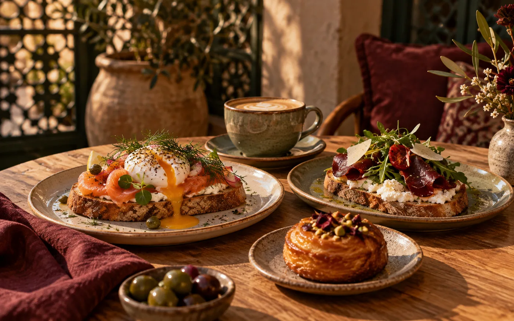

Les tartines salées
Saumon, bresaola ou option végétale — généreuses, fraîches et sans surcharge.
Pour un vrai brunchBrunch · café · douceurs
Du frais, du fait avec soin et des assiettes qui ont du cœur — dans un petit cocon à Ariana.

61, rue KehnaIci, pas de brunch XXL fabriqué à la chaîne.
Bol & Miette mise sur une carte courte, des produits choisis et des assiettes préparées avec attention. Bois naturel, lumière douce, accueil personnel : une vraie pause, loin du bruit.
04 — Passez nous voir
À quelques minutes d’El Menzah, pour un petit-déjeuner calme, un brunch entre amis ou un café en solo.
Ouvrir dans Maps ↗61, rue Kehna
Ariana, Tunisie
Lun — Ven 08h00 — 20h00
Samedi 09h00 — 14h00
16h00 — 20h00
Dimanche Appelez avant de venir
Horaires issus de fiches publiques et à confirmer auprès de l’établissement.